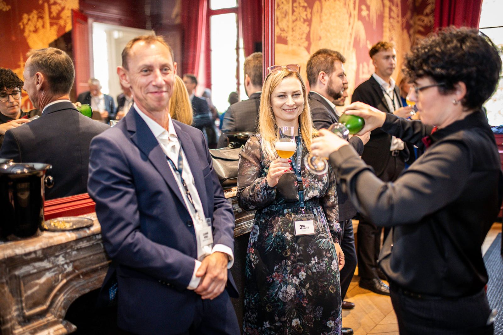

Nos réalisations
Des expériences imaginées. Des souvenirs partagés.
Depuis 2015, Beer My Guest accompagne entreprises, agences et particuliers dans l’organisation d’expériences authentiques en Belgique. Voici quelques projets, racontés de l’intérieur.
Notre approche
Chaque projet raconte une rencontre.
Deux personnes ou plusieurs centaines ? Une activité existante ou une demande complètement hors cadre ? Nous adaptons nos expériences à chaque groupe. Pour chaque réalisation, vous découvrirez le type de client, le lieu, l’activité organisée et la façon dont l’expérience s’est déroulée.
Sélection
Nos réalisations
Team-buildings, soirées d’entreprise, incentives, découvertes gourmandes ou célébrations entre proches : choisissez un type d’expérience.

Votre événement
Et si votre événement devenait notre prochaine belle histoire ?
Team-building, incentive, soirée d’entreprise ou célébration entre proches : racontez-nous votre projet, nous imaginons l’expérience qui vous ressemble.